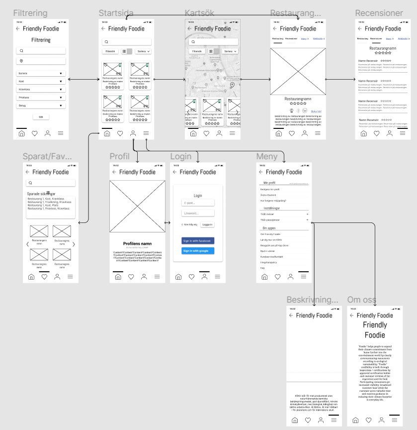

Inledning
I kursen Grundkurs i Interaktionsdesign så började vi med vårt första riktiga projektarbete i utbildningen. Vi skulle med temat hållbarhet gå igenom alla faser i designprocessen. Målet var att ta fram en prototyp på en webbsaserad tjänst i Figma. Det var ett grupparbete och vi hade fyra medlemmar i vår grupp.
Eftersom projektet gjordes under första terminen och att vi har studerat på distans så kände inte vi gruppmedlemmar varandra innan. Därför började vi med att lära känna varandra lite och diskutera vad hållbarhet innebär för var och en.
Frågeställning
Frågeställningen växte fram under arbetets gång, så som det kan bli när man börjar ställa frågor till varandra och potentiella användare.
Vår generella frågeställning blev:
Hur får vi konsumenter att göra hållbara matval?
Därefter började vi diskutera vad vi tycker det finns för behov kopplat till den frådeställningen och som ni kan läsa mer om under rubriken "Tema och Bakgrund" så kom vi fram till att vi vill se mer hållbart tänk när en konsument går på restaurang.
Den specifika frågeställningen blev:
Hur får vi kunder att välja hållbara restauranger?
Vår slutgiltiga frågeställning växte fram under research, läs gärna under rubrikerna "Tema/Bakgrund" och "Research".
Vår slutgiltiga frågeställning blev:
Blir kunden mer benägen att göra hållbara val om det finns lättillgänglig information?
Tema/Bakgrund
Livsmedelsproduktion, som direkt påverkas av vår konsumtion, är ett av de områden med allra störst påverkan på miljö och klimat. Men det är också något som är absolut nödvändigt för vår överlevnad. I dagens samhälle väljer många att ta miljöanpassade beslut i hemmet, men det faller ofta bort när man går ut för att äta. Två faktorer som spelar in på varför det är så svårt att förändra sin livsmedelskonsumtion, förutom etablerade vanor, är brist på kunskap om alternativ samt en låg tilltro till att det gör skillnad.
Vi har valt att fokusera på den ekologiska hållbarheten då den ligger till grund för social och ekonomisk hållbarhet. Vi vill med vårt koncept uppmuntra hållbara konsumtionsbeteenden och tillgängliggöra information för att konsumenter ska känna att deras val gör skillnad. Det är viktigt att vi börjar ta miljövänliga beslut även i val av restaurang, med ett tydligt koncept där man fokuserar på att synliggöra hållbarhetsaspekten så vill vi även inspirera restauranger att tillämpa ett miljövänligt arbetssätt.
I Sverige finns det nätverk, manifest och arbete för hållbara restauranger. Det finns även guider/artiklar som lyfter restauranger som jobbar med hållbarhet. Däremot så finns det inte en app/webbsida som är nischad på just hållbarhet, utan det kräver mycket tid och engagemang av konsumenten att själv gå igenom det materialet. KRAV har tre olika certifieringsnivåer för restauranger och har inlett ett samarbete med The Fork som har lagt till ”Krav” som en valmöjlighet i sin boknings-app. The Fork är dock inte inriktade på hållbarhet som koncept och det framgår inte på ett tydligt sätt att de samarbetar med KRAV.
Research
Vi valde att ta reda på våra frågor om konsumenters beteende genom enkät och semi-strukturerade intervjuer. I och med pandemi så valde vi att använda oss av folk i vår närhet för intervjuer. Enkäten spred vi på våra sociala medier och i skolans nätverk för att få med så många som möjligt.
Därefter sammanställde vi informationen som vi har fått och kom fram till tre stycken beteendetyper genom att göra ett Affinity Diagram.
Våra insikter från research var följande:
- Majoriteten av de vi har intervjuat vill göra hållbara val men känner att de hålls tillbaka av tid och ork.
- Även de som ofta handlar miljövänliga produkter tänker inte på vad de äter ute på restauranger.
- De som lever en hållbar livsstil och t.ex. aktivt frågar om varors ursprung på restauranger känner sig ofta som den jobbiga konsumenten och upplever social stigmatisering.
- Majoriteten som vill göra hållbara val vet inte hur de ska gå tillväga i restauranglivet.
- En app är ett enkelt sätt för en användare att ta reda på information.
Våra beteendetyper:
Därefter valde vi att fokusera extra på en beteendetyp under tiden vi designa vår app. Vi fokuserade på beteendetypen prioriteraren. Med en enkel, tydlig och bred design så går det fort att hitta en restaurang man söker. Prioriteraren kan ta bättre hållbara val utan särskilt mycket kunskap, tid och energi. Prioriteraren vill även göra kvalitativa val och därför har vi recensioner.
Vi asner att det är ett enkelt hållbart val med ikoner som visar certfikationer och dess nivå. Även att det visar om det finns vegansk eller vegetariska alternativ.
Konceptformulering & Konceptskiss
Därefter valde vi att fokusera extra på en beteendetyp under tiden vi designa vår app. Vi fokuserade på beteendetypen prioriteraren. Med en enkel, tydlig och bred design så går det fort att hitta en restaurang man söker. Prioriteraren kan ta bättre hållbara val utan särskilt mycket kunskap, tid och energi. Prioriteraren vill även göra kvalitativa val och därför har vi recensioner.

Informationsarkitektur & Flödesbeskrivning
Vi gjorde en Sitemap och en Flow Chart på appen för att få en övergripande bild av hur appen skulle byggas. Tyvärr syns det inte bra på bild på grund av liten text så finns inget att visa visuellt. Vi använde Figma och Lucid för det arbetet.
Wireframes & Prototyp
Wireframes och prototyp gjorde vi i Figma. Både wireframes och prototyp gjorde vi Lo-Fi. Vi började med att rita på papper och göra skisser på varsitt håll hur vi föreställer oss appen. Därefter så plocka vi ut det vi hade gemensamt och började där. Därefter plockade vi fram det bästa ur våra skisser och skapade en wireframe som alla hade varit delaktiga i.
Prototypen blev en enklare variant där endast dem vesäntliga knapparna fungerade. FAQ, redigering av profil och andra inställningar har inga wireframes.
Bild nedan visar hur flödet, wireframes och prototyp såg ut.
Användningstester
Vi valde att testa prototypen på 1-2 personer var, vilket blev sex personer totalt.
De viktigaste resultaten från användningstesterna:
- Användare klarade att ta sig igenom appen utan problem. När jag fråga var man loggar in var det inte självklart att det var under profil men det var där han kollade först.
- Användaren hade svårt att tolka menyikonernalägg till text under ikonerna.
- Funktionen som visar om man är på hemskärm eller profil etc, kan misstas för en scrollbar.
- Användaren klarade att logga in på appen, navigera sig igenom funktionerna.
- Kunde inte gå tillbaka från "sortera" drop-down genom att klicka var som helst på skärmen.
De fel vi hitta under användningstesterna korrigerade vi.
Reflektioner
Arbetet var roligt och man lärde sig väldigt mycket, det var skönt att kunna backa tillbaka utan dåligt samvete när vi fick insikter under arbetets gång. Självklart var det inte en rak väg, vi ändrade fokuset till en viss certifiering längre in i arbetet när vi insåg att det kommer vara svårt att övertyga en användare om vad som är hållbart. Med certifiering så fick vi in redan bestämda krav på hållbarheten och det är ett certifikat som många kan relatera till. Eftersom företaget med certifiering inte har något med arbetet att göra så har jag tagit bort namnet i min portfolio.